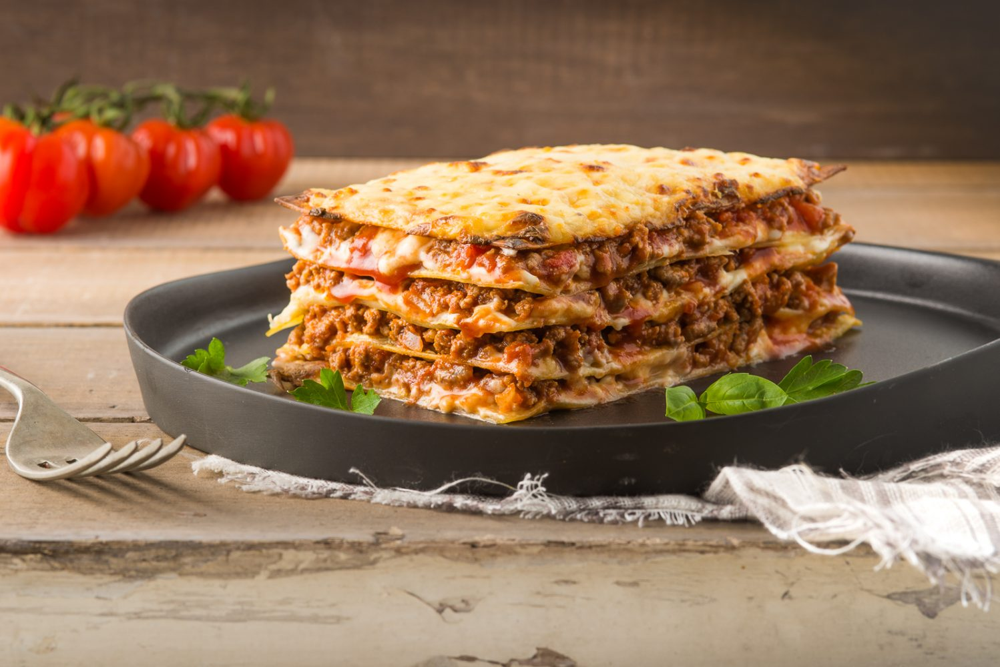

My Apology to You my Darling Rasool
My Darling Rasool. I know we had a really bad fight last time we saw each other and i'm so sorry for what i did. I know that you only wanted my support and comfort and i should have come to your house and be there for you. I know i was busy with work but I hardly ever see you. And i just wana say that i'm deeply sorry for not coming or even replying to your message, let alone a phone call to appologise. So I decided to make this form for you that i want you to fill in as an apology and my way of making up for time i have lost out with you.
Favourite Dish
So I decided on making you your favourite dish, Lasagne. I just to show you how much i care, ima make it just the way you like it with your favourite ingredients:

Ingredients
- 15 ml olive oil
- 2 cloves garlic - chopped finely
- 4 carrots - peeled and finely chopped
- 3 sprigs fresh rosemary - chopped
- 1 onion - peeled and chopped finely
- 100 g bacon - finely chopped
- 750 g lean minced beef
- 1 can chopped tomatoes
- 1 box of knorr lasagna mate
- 125 g butter
- 3/4 cup flour
- 1 - 1.5 l milk
- Salt and black pepper
- 1/2 cup grated Parmesan
- 2 tsp Paprika
Method
-
Heat the olive oil in a large pot and sauté the garlic, carrots, herbs, onion and bacon for a few minutes on high heat.
-
Add the meat allowing it to brown. When mixed through, add the can of chopped tomatoes.
-
Set the stove on medium to low heat, cover and let it cook until the meat is cooked and the carrots are soft. You might want to give it a stir every now and then. Set aside.
-
Prepare "Rasool's" sauce: Heat the butter on medium to high heat in another saucepan until melted, remove from stove and add the flour. Whisk and then add the milk. Give it another whisk through to ensure that there are no lumps.
-
Put it back on the heat and whisk as it heats up, cooks through and thickens to your liking. Add salt and black pepper to taste.
-
Use an oven-proof dish to construct your lasagna layers. First off, drizzle a tablespoon or two of the meat juice from the pot of lasagna meat. There should be quite a lot of juices that cooked up.
-
Then slide one or two (depending on the size of your dish) pasta sheets on the bottom of the dish, top with a small layer of meat, a layer of "Rasool's" sauce and another layer of pasta sheets.
-
Repeat this step, now the last layer should be the "Rasool's" sauce (depending on how deep your dish is).
-
Sprinkle the top of the "Rasool's" sauce layer with grated Parmesan cheese and paprika, and bake in the oven for 30 minutes. A knife should easily glide into the baked lasagna when it’s done.
-
Serve hot with a side of salads, or healthy vegetables.
Movie of Choice
Down below is a list of movies available for us to watch so please have a lok at them darling and choose 1 of them featured in the dropbox below the list.
-
The Nun

-
The Wedding Singer

-
Avengers: Infinity War